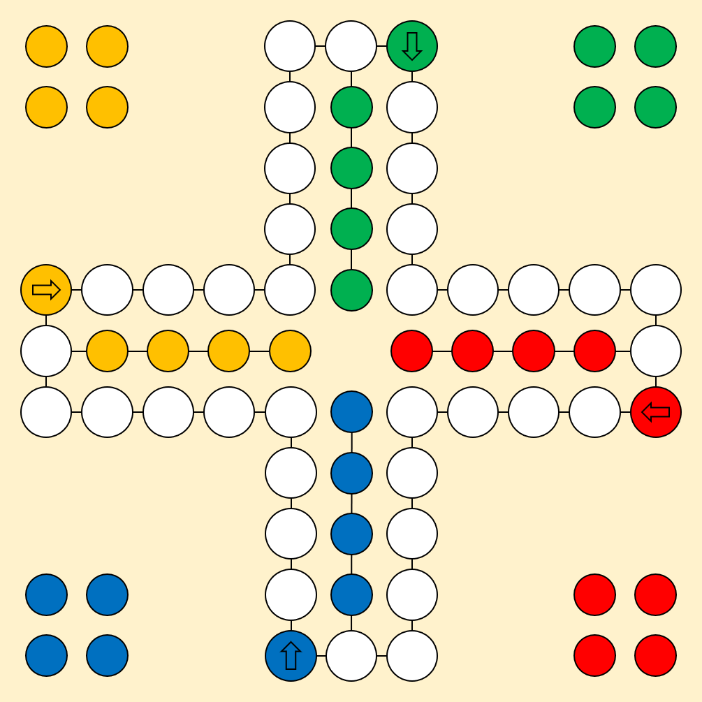

<h2 mat-dialog-title>Camera config</h2>
<button mat-button class="close-icon" [mat-dialog-close]="true">
    <span class="material-icons">
      close
    </span>
</button>
<div id="stream">
  
  <canvas id="preview" width="480" height="480"></canvas>
</div>
<div id="colors">
  <div class="color">
    <div class="color-preview"></div>
  </div>
</div>
